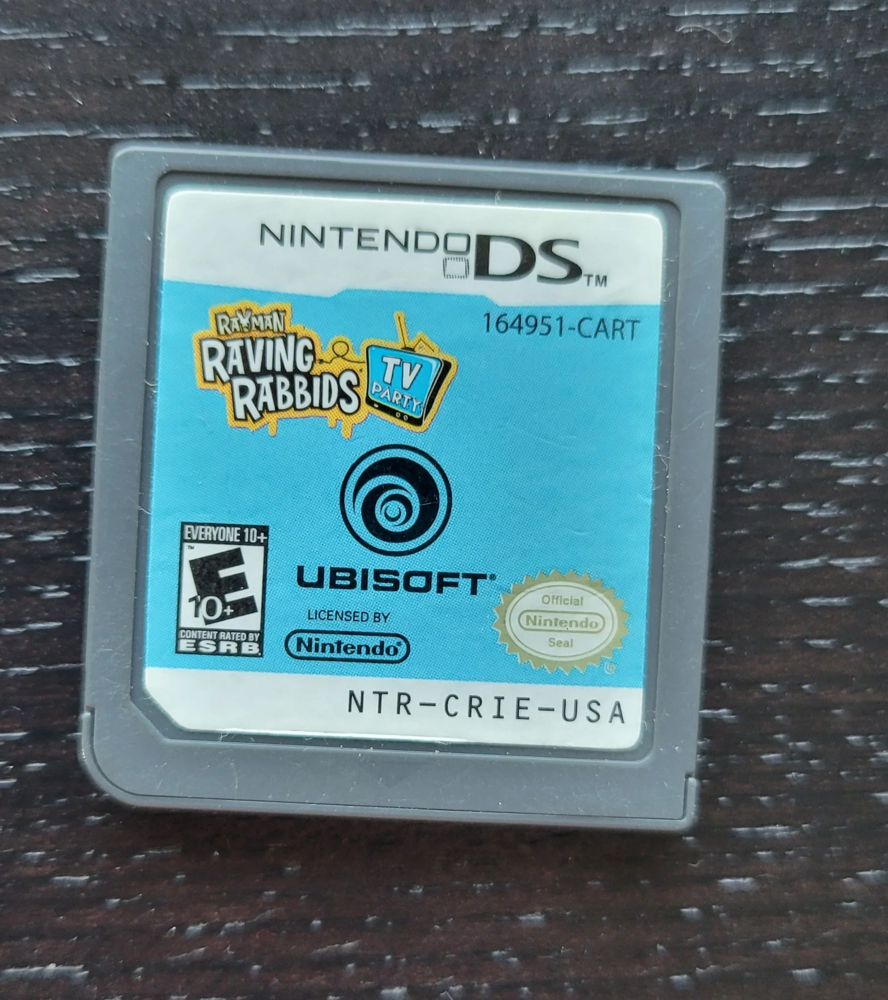

Rabbids
for context: this is a draft from like 6 months ago from before i stopped bothering with syntax. i dont feel like rewriting it cuz its still accurate. have fun!
2006
The Rabbids first appeared in Rayman Raving Rabbids (RRR). It was a launch title for the Wii. ((as an asides, this trailer fries me. NONE of this is in the game besides the outfit! Not a single bit!)) a party game from 2006. This game was originally meant to be Rayman 4 (due to an unfortunate mischedule involving the PSP port of King Kong), before getting scrapped mid-developpement (inadvertendly killing Rayman off, as I'm sure you're very well aware of) and getting rebuilt from the ground up as a party game. You can actually see the roots of Rayman 4 in the very first two minigames you play; they're significantly grittier than the rest and namely focus on Rayman. I don't mind it because I love the Rabbids. I am willing to bet most Rayman "fans" haven't even played Rayman M. Anyways, RRR is not the best game of its kind. Everything about it kinda sucks? My favorite feature of this game is the extensive costume system for Rayman. You'll never guess what it was originally for (they deadass gutted Rayman 4 for parts). In another unrelated instance of Rayman 4-ism, I want to talk about the main area. It is a Rabbid colliseum (without ancient Roman seats) and within it is Rayman's cell. It's really cool because you can see it over time as the Rabbids start warming up to you. But it is so painfully obvious that they just wanted to make a Rayman game man. For a first go at a party game, is isn't bad, I suppose. Mario Party 1 also sucks. Although, this isn't the game I wrote this blog for. The other Rabbids games are far, far superior to this one and are much more fun. This game is notable for being the Rabbids game with (as far as I know) the most ports. It was released on PC (developped by Ubisoft Bulgaria!) , 360, PS2, Wii, DS, GBA (haven't played this, but I can safely assume it blew), and J2ME. J2ME is basically a little version of Java that used to run apps on old flip phones. There are quite a few J2ME Sonic games, for example. I'm bringing this up because these J2ME RRR games are cute. This one in specific has next to nothing to do with the party games. It's just a cute little Rayman platformer. Rayman can do a Raging Demon. Rayman Golf is another example of a notable J2ME game.
2007
RRR2 is yet another party game, but I actually dig this one. It is a perfection of RRR in every way that it could be. The plot is more charming to me, although it hardly matters. In RRR, Rayman is captured by the Rabbids and is forced into a Rabbid colosseum. No, they do not have ancient Roman seats. Anyways this plot just kinda sucks I don't know. And the main area is also bad. The RRR2 plot is great though. Rabbids are invading the world (guess you could say it's a Rabbids Invasion? Huh.) using floating submarines. They're just kind of evil as fuck. And Rayman infiltrates the Rabbid troops by disguising himself as a Rabbid. He then boards the submarine, and we go on trips across the world. This is much cooler thematically because you can use it to justify different areas that might exist. The main hub is also way, way better. It's airport-themed which automatically gives it a S tier. I don't remember if RRR1 had multiplayer off the top of my head (I assume it did but I can't recall), but RRR2 definitely did and it was a lot of fun. It's just your bog-standard multiplayer mode. Play minigames until a certain amount of rounds, upon which the player with the most points wins. If RRR1 is a meh 6/10 game involving Rayman, this is a good 9/10 game involving Rayman.
2008
RRR: TV Party is third RRR game. Yeah, I don't know why it's called TV Party. Compared to RRR2, it's fairly stagnant. Can't improve much on perfection, I suppose. This one has by far the best plot of the series though. Rayman is being chased by the Rabbids as he runs back to his house. He manages to get inside safely and locks his door. The Rabbids then get struck by lightning and teleport into his TV. They proceed to torture him for the rest of the game. This is the last Rabbids game ever to have Rayman (or at least, until Mario + Rabbids: Sparks of Hope, where he is available as DLC). He is straight up dead after this. This game is easily my favorite out of the trilogy. Each minigame has a cute cutscene, the minigames themselves are more fun, and as a matter of fact, there is even one that inspired Just Dance (as a matter of fact, they were both developed by Ubisoft Paris! Although their release dates are separated by exactly 1 week.. I wonder what happened?). I remember there being a lotto minigame where the Rabbids were bouncing around that used to freak me out as a kid. There was just something about the ominous music and the dark backgrounds. There is a unique multiplayer adverts mechanic which triggers a reaction time minigame (minigame-ception). The winner of said minigame gets a bonus for the next round. Although RRR2 was skipped, this game also got a J2ME port. This one is also very different from TV Party. It features 10 or so unique minigames involving the Rabbids; Rayman is very much dead at this point in the series. Overall, I would say this game gets a 10/10. It is the perfected form of a Rabbids party game. It is time for these Rabbids to move onto greener pastures..
2009
Rabbids: Go Home (RGH) is the first Rabbids game to not be part of the RRR franchise. And, I cannot stress this enough, they HIT IT OUT OF THE PARK. It is a game about Rabbids trying to get to the moon by building a huge pile of stuff. In the levels, you build this pile of stuff up by collecting random junk. In the business, we call these collectathons. And it is an excellent one. I pretty much have nothing to say but praise and love for this game. It practically raised me! The primary mode of control is a Rabbid pushing a shopping cart, which is actually far more intuitive than it might sound. There is a two player capacity, but it's very limited (think of it as the Luma from Super Mario Galaxy). There is a Rabbid customizer, wherein you can shake the little freak inside your Wiimote. They also released this customizer as an individual WiiWare download titled Rabbids Lab. You can shake the Rabbid inside your Wiimote and make him suffer. The game is extremely fun. The cutscenes are cute, the level design is fine (it doesn't need to be any more). There are quite a few sections where your movement is modified. In a hospital section, for example, you can pick up a guy suffering of a deadly illness to get a double jump. I can also guarantee that you are familiar with the soundtrack of this game. Overall, this game is just plain fun. I can't think of any reproach I could give it. The Wiimote + Nunchuk layout is godawful, but that's not inherently a fault of the game. I've never played the DS port but I assume it's pretty bad. This game gets a 10/10 + chef's kiss.
2010
Technically, 3 games released this year, but I won't talk about them. I'm only bringing this year up because they released a mobile app named Rabbids Go Phone, which is incredibly funny to me. I think it was some kind of Talking Tom meets Rabbids Lab style game? Yeah that's all I have to say. I didn't know it existed until I started doing research. Later on, they released Rabbids Go Phone Again, which is just a hilarious title to me, wherein they remove the Bwaaaah! button. The defining feature of the Rabbids? Why??
(retroactively adding this) you all know aardman, right? wallace and gromit? well, they love the rabbids. so much so that they even worked together with ubisoft on the promotional website for rabbids travel in time (which released this year btw, i didnt bring it up because i didnt really like it as a kid and never played it past like level 1) ((also, i cant find any evidence of this because the promotional website doesnt credit anyone other than ubisoft, but every news story ive found about aardman states this random fact, so i have to assume its true)! they also announced that they are joining forces with ubisoft to produce a pilot of a rabbids tv show.. they are looking to hire someone familiar with live action cgi, which would suggest the rabbids pilot is gonna be set in the real world! (more on this later)
2011
RR: Party Collection (Feat. Rayman) released. As far as I know this is the longest RR title ever. I'm only bringing it up because of the Feat. Rayman in the title. He's a featuring star in his own series!! Madness. Otherwise it's just the RR trilogy. Nothing to see.
I would urge you to read IGN's scathing review of RR: Travel in Time 3D. It's hilarious. You can feel the vitriol.
2012
Rabbids Land. Oh, Rabbids Land. It is the "modern evolution" of the RR trilogy. It is a Wii U party/board game mix (much like Mario Party). The very first thing you will notice about this game is that it is *slow*. But like, so slow. I cannot stress this enough. It is the slowest board game I have ever played. A game of Monopoly takes less time than a full Rabbids Land game. Think of literally any action, and the game will execute it in an awful, slow way. Character making? That's 8 minutes of cutscenes, baby. Oh, and you have to unlock the grey color by making a Ubisoft Uplay account and linking it to your Wii U. Great start, guys! So on and so forth. I think the biggest offender is the loading times though. They are Sonic 06 levels of awful (LARPing because I've never played that game. Sorry!). Every action has a 5 minutes load screen. And the loading icon for this game is a stupid dancing jester Rabbid with an annoying music loop. It is genuinely one of the worst gaming experiences you could possibly have in 2012. And. It was a launch title for the Wii U. One of the very first things you could ever play on this thing was a dogshit board game. This is kind of why the Wii U wasn't/isn't very popular. What separates the board play from Mario Party is that you can chuck items at your opponent and slime them out. Unfortunately, most of these items do the same blanket function of "blow the opponent up". The variety leaves much to be desired. As for the board play, you have to run around on a fairly basic map (literally three rings with connecting bridges, with the center ring being one case which we'll get to in just a moment), and on this map, there are 6 types of tiles: giftboxes that give you an item, question marks that make you answer a trivia quiz (and not, like, a Rabbids trivia quiz, just generel trivia. Questions like "how much of human speech is used to talk to oneself?"), a lucky clover that gives you a jackpot, a dice that lets you roll again, a red skull that trolls you and a minigame tile. There can only ever be 2 players inside a minigame, one on the gamepad, and another on the TV. In a 4 player party game. The way you are meant to play this game is that you have one gamepad and one Wiimote. You pass the gamepad around to any given player when it is their turn. This does not help with the slowness issue. There is so much friction between every turn. Imagine if Mario Party required you to pass the same dirty ass joycon every round for every player. The way you win is by collecting either 10 or 20 trophies, depending on the setting you chose. DO NOT CHOOSE 20 TROPHIES. Winning a minigame gives you 3, correctly guessing the trivia gives you 2, correctly betting on the player being right or wrong at the trivia gives you 1 (the way it works is that the gamepad player, so the one palying the round, can guess one out of four options, and then the wiimote players, who all share one wiimote, have a popup on the screen like [Player 2], do you think [Player 1] is right or wrong? and you have to choose Yes or No, until everyone put in their answer. I genuinely cannot fathom how they came up with this, and decided that this was way better than simply being a three wiimote + gamepad game. Especially because a majority of Wii U owners were Wii owners, who probably already HAVE the wiimotes!). I don't feel like detailing the rest of the game because you get the picture. One thing that I will give the game however, is that I think the animations are extremely cute. When you step on a minigame tile, you and a buddy will get launched out of the board into the minigame area, which are all themed like their own theme park ride. I think those buildings look great, and I love that the Rabbids stare angrily at eachother while they walk in. It's a cute touch. The minigames themselves are also pretty good. I still distinctively remember the one where you have to buckle everyone into the ride before it starts and they fall off and die. It was weirdly graphic for a Rabbids game. My favorite one gameplay-wise has to be the thief one (don't feel like putting into words but you can find an example of it online, I believe in you!). The reason that the original RR trilogy works so well mostly comes down to the pacing. The game's speed meant that if you didn't like a minigame, it wasted a minute of your time and then it was over and onto the next one. There was plenty of variety, and if there is 100 jokes per second, one is bound to land. This game goes in the exact opposite direction, and for that reason, it falls flat. Overall, this is an excellent game to play if you want to lose friends.
edit after the fact: im watching some rabbids land gameplay, and the loading times are blitzing fast, and there are barely any. im gonna assume i had a shitty scratched disc and that the game loads perfectly fine on a regular disc. still horrendous tho
Oh yeah, and Rabbids Rumble released this year too. On the 3DS. This game is genuinely so close to being a Rabbids YOMIH-like. Unfortunately it's just a turn based RPG singleplayer board game roguelike. Oh well. This game's main menu is extremely cute. It looks like the Rabbids are inside your console, and the camera is right behind where the cartridge would be connecting to the motherboard. Of course, since I pirated it, there was no cartridge of any kind.
2013
Rabbids Invasion releases. aardman just.. vanished. instead, ubisoft motion pictures is the one animating it. what a shame. It is a TV show about the Rabbids doing dumb shit. I haven't brought this up beforehand, but the Rabbids are an extremely French franchise. So this is a French show. The interesting thing about it is that the seasons loosely adapt the concept of previous games. For example, season 2 is about trying to get to the moon, much like Rabbids Go Home. (ok youre fully caught up to the draft now) for some reason every season has a "mad scientist" character but they keep switching him out? In season 1 it's a regular rabbid with homophobia in his eyes, in seaosn 2 it's a mad scientist rabbid, and in season 3 and 4 it's an ancient short rabbid with a beard. i guess they got bored of the characters? there are 26 "episodes" per season, but there are 3 segments per episode, which makes for 78 plot outlines per season. most of these are voiceless slapstick, and i think they're pretty good. my favorite episodes are the ones where humans put rabbids in a lab and try to run experiments and fuck everything up. it has a portal-like vibe to it.
2014
they released rabbids invasion: the interactive tv show, which as far as i can tell is just a bunch of episodes from season 1 with kinect minigames stapled onto them? complete beast mode.
ok, completely unrelated to the rabbids, but i notice such a weird shift from this year and afterwards. it is genuinely impossible to find any developement information about rabbids land, or rabbids invasion: the interactive tv show. but any rabbids game after this? extremely easy. hours upon hours of developer interviews, websites upon websites, behind the scenes movies. what happened?? did developers get the credit their rightly merit after all this time? i mean, people like miyamoto were always celebrated as heroes, so why not these guys? just food for thought.
we are at E3 2014. a man named davide soliani walks up to shigeru miyamoto and gets ready to show him a certain project. later, miyamoto will be reported as saying he fell in love with davide's passion. here is how soliani describes a previous E3 encounter with miyamoto: "I was super proud of [disney's the jungle book for gba, a game he directed]. I remember a review saying that it seemed like a Nintendo game. So the first time I went to E3 (ok so this interview isnt actually very clear on the date of this happening. the only thing i know is that this was before 2002), I brought my Jungle Book game and I met Miyamoto. But I was so shy, like a little kid, that I just gave him the game and asked him to sign it, without even saying hello, presenting myself and explaining that this was my game. So, Miyamoto-san looked at the box like: 'Hmmm, this isn't my game.' But he signed it anyway because he is such a gentle guy. When he gave me the signed game, which of course I still have, I went out of E3 and cried like a baby." davide had also stalked miyamoto at E3 2002, wherein he called every four or five star hotel in milan to figure out where miyamoto was staying, and greeted him with all of ubisoft milans games. this guy is weird.
2017
a few years went by. nothing happened in 2015, and virtually nothing happened in 2016. so what gives? well, i presume that ubisoft was reluctant to push out more quick fodder party games after the failure of rabbids land. they learned to sit back and observe. not everything needs a reaction, after all. anyways, we are in 29 august 2017 (they didnt get release day game rights this time), the nintendo switch is out, and ubisoft is releasing their big one: mario + rabbids kingdom battle. but let's backtrack a bit. the aforementioned davide soliani is our main character of this story. he is a game director working at ubisoft milan. during E3 2014, he got the chance to show shigeru miyamoto his rabbids-meet-mario project. miyamoto seemed very excited about the project. his main concern was about mario holding a weapon. but after finding out that davide and his team built the mario rigs from scratch, and that they were so impressively close to the real deal, he figured that "ubisoft understood mario as a character" well enough. they eventually settled on science-fiction weapons like plasma blasters. miyamoto was also very interested in the gameplay opportunities of a rabbids and mario title. they also somehow got music composer grant kirkhope (of banjo kazooie and dk64 fame) to sign on the project. davide had this to say about their collaboration: "The first time I met with Grant was in Paris," Soliani remembers. "I was showing him the prototype and he was completely absent of any emotion, to the point where I thought that maybe he doesn't like this at all."
Kirkhope cuts in: "I was scared. I got an email from Gian Marco, the producer in Milan in November 2014. He said that he had a game that I might like to do. So I got the NDA all signed up and it was called Rabbids Kingdom Battle. I thought it was a Rabbids game. It took them a while to fly me out to Paris to meet with Davide [Kirkhope is based in LA]. I remember they took me to the studio and into this backroom. It was all big security, no-one could get in, it had secret keys and all that. I thought it was a bit strange for a Rabbids game. I sat down, and Davide turned on the TV and Mario was there. I thought they'd just been playing a Mario game. And then he started to move Mario. And I was like, 'What are you doing'? And he said: 'This is the game, it's a Mario game'. That was the first I heard about it. It struck me... how on earth was I going to write music for Mario after Koji Kondo, who is the greatest games composer in the world? I thought this is impossible. I can't possibly write music for this game, I'm just not good enough. So I had this blank expression because the fear had gone from 0 to 60 in one second flat."
(did you read the first part of this excerpt and think that kirkhope hated working on the game? because that was my experience lol i was so scared)
during developpement, davide and his team were extremely apprehensive about.. everything really, with the nintendo characters. eventually, it was nintendo themselves who pushed them to take risks with the characters. miyamoto went as far as saying “Show me your colors. Show me your Rabbid’s humor even more. Show me how crazy you can be.”
you can really feel the passion oozing out of this game. all the characters are really lovely. on release, i was with my cousin, and he got the gold edition while i got the standard one. i stole his game pass code and got free dlc and he was so mad. to this day i havent played the dlc. anyways, this is an xcom-style game where you shoot rabbids with a gun. the story doesnt matter because its basically nonexistant. a standout boss would be the phantom of the bwahpera. he disses mario. the team was initially very reluctant to add this, but nintendo laughed and greenlit it. the game is really fun! the gameplay is so good. very lovely. my only reproaches are that its way too easy and i could not give much of a fuck about the story and that its reallyyyyyyyy slow. but i do enjoy walking around the overworld and some of the cutscenes. the dash and team jump mechanics are instant classics. they couldnt possibly fuck this game up..
8.5/10 it was really good
2021
they released mission to mars on france 4 and okoo, and finally on netflix in 2022, which serves as the series finale for rabbids invasion. it's an alright film i suppose. it features the smart ass rabbid from seasons 3/4 while he desperately tries to get on a rocket. it was made in blender? that's something? yeah idk. i would it like 6.5/10
2022
big year for the rabbids. two "mainline" games released this year; rabbids: party of legends, another rabbids party game. this one is chinese. and mario + rabbids sparks of hope. mario dual wields in this one.
party of legends kinda went under the radar. unlike the other RR titles, this one was developed by ubisoft chengdu studio, located in china. it's kind of interesting, because the main mode is a story mode set in ancient china where you and a party of 3 other friends. you travel along set points on a map, there are various minigames and other fodder stuff. the story is separated into four different acts, and the ultimate goal is to end up with as many books as possible at the end of every act. this game also reintroduces the various rabbid costumes, but, of course, theyre chinese costumes now. this game is an improvement over rabbids land in every way, if only for the fact that everyone has their own controller. the minigames are also much more fun. 8/10!
mario + rabbids 2. i dont have anything to say about the game. i would honestly consider it a downgrade to the first. the xcom style gameplay is weird now. instead of moving a cursor around, locking in, and then having the character move, the character themself will move, so it's slightly more real-time, which i just like less. i liked the tighter environments of the first a lot more, even if it felt very on-rails. one game is an innovative and creative spin on something, another is just repetitive.
the third dlc (first and second dont matter) features rayman. RAYMAN! AS A PLAYABLE CHARACTER! here's what davide had to say about rayman not being in mario + rabbids 1: "We discussed it, but honestly, we thought that the strength of the Rabbids is that they are a white canvas, so you can do pretty much whatever you want. You can come up with crazy ideas and they work. We tried to bring the same spirit into this game. Mr. Miyamoto kept saying, 'Show me your colors. Show me your Rabbid’s humor even more. Show me how crazy you can be.' (yes i copied an excerpt from this excerpt, sue me) Of course, Rayman was part of the Rabbids games in the past, but now those are two separate universes.". however, he also states that bringing rayman back into the spotlight for sparks of hope was a dream come true for him. he also says that there is a hidden message for rayman fans who have 100%'d the dlc, but i can't find any instance of it online, and i'm sure as hell not playing through the whole game again and dlc for one message, so i will just believe it's a rayman 4 teaser or something.
2026
the lapins crétins (that's the french name btw. not "lapins crétins" or "les lapins crétins", its precisely "THE lapins crétins" for some reason): color chaos released this year. it is a vr splatoon-like; the catch is that its only available in certain dedicated spaces as an experience, notably eva spaces. eva is basically an empty room that you rent out with a bunch of vr technology. paying 20 bucks for 30 mins of fun is much cheaper than a quest 3 and you will probably end up with the same amount of playtime lol (depending on who you are. i love my quest 3) (hence, it's not on wikipedia's page for the rabbids, because i think it doesn't fit the criterias to be considered a game?). the game is literally just splatoon. you have to paint an arena and slime the opponent rabbids out. i honestly dont know why the rabbids are in this game? there is nothing that really represents them. you're thrusted into an empty location that looks like it was freshly bought off the unity asset store. what's kinda cool is that the game locally runs on a bunch of pico 4 ultra entreprise models. since they cost around €1k each and playing this game costs €20 for roughly 40 minutes, that means that the headset needs to do 50 sessions before rentablizing itself, or 33 hours worth of sessions. if you don't plan on playing rabbids: color chaos for more than 33 hours, this is the way to go. not to mention that this is a proprietary game that you couldn't even play in your own home. although you 100% should be able to. i imagine that this is a limited time deal and that it will just be dropped on the headset stores eventually. i could technically play this (there is an eva location like 50 mins away from where i live that's doable (OPSEC LEVEL: forgot to turn the vpn on) and i could give you some sweet feedback. but i wont bc my back hurts and i dont really want to. so im just watching gameplay <3. you can't actually kill the opps, shooting them just slows them down. i reckon that the reason for this is because, if you were to straight up kill the opposing rabbid, the tracking system they use would be offsync. anyways, this isn't the first vr rabbids game. back in 2018, we couldn't even fathom good portable vr, so the lady in the video has to wear an msi vr one, which was essentially a gaming laptop transmogrified into a backpack. this was once the lightest and best way to do portable vr. as far as i know this game is lost media. let's hope color chaos doesn't meet the same fate!
there is another rabbids vr ride titled virtual rabbids: the big ride. it seems like an arcade machine. holy shit those headsets must be so dirty. i don't want to think about these anymore.
i'm not really sure how to conclude this post. how can a euology measure a life?

this is genuinely the worst cartridge i have ever seen oat